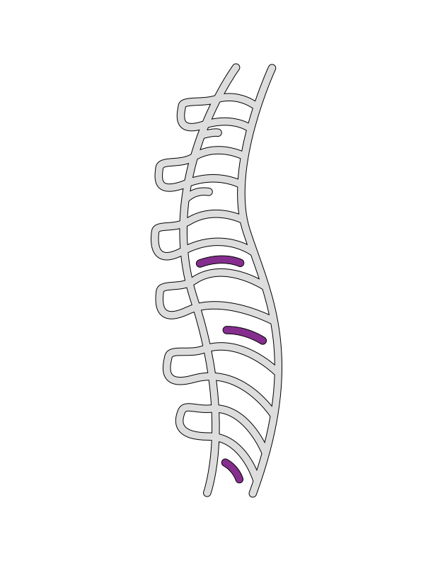
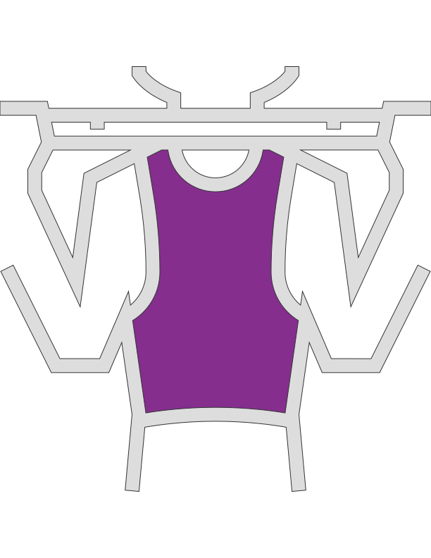

ВОЗДЕЙСТВИЕ АЛЬФА ГРАВИТИ

разгрузка позвоночника
 хорошо для ЦНС
хорошо для ЦНС
 глубокое расслабление
глубокое расслабление
 сила
сила

восстановление суставов
 расстяжка
расстяжка
выявляет проблемные зоныСпросите у тех кто уже попробовал и получил свой заряд бодрости, радости, и здоровья.
восстанавливает здоровое состояние
улучшает настроение
повышает работоспособность
хорошо для ЦНС
глубокое расслабление
сила
расстяжка
максимальная эффективность за минимальное время
разгрузка и отдых для позвоночника
восстановление суставов после компрессионной нагрузки
укрепление, растяжка и глубокое расслабление за одно занятие восстанавливает здоровое состояние
снятие мышечного и психо-эмоционального напряжения и, как результат, лёгкость и энергичность
А еще оно расскажет как работает Альфа Гравити и насколько оно эффективно, смотрим!
ВАШ ПЕРСОНАЛЬНЫЙ ТРЕНЕР - Сергей Михайлов. Сооснователь АГ. Разработчик индивидуального снаряжения, для занятий. Автор методического пособия, для тренеров АГ. Участник теле/радио программ, на тему АГ. Автор многих публикаций о воздействии АГ на Тело и психику.
ПРЕИМУЩЕСТВА ЗАНЯТИЙ СО МНОЙ: + С 2011 года занимаюсь, с 2014 года преподаю и обучаю АГ + Много внимания уделяю безопасности. За годы Практики разработал систему страховки и эффективные способы сделать тренировку безопасной. + Забочусь о вашем комфорте. Мягко и постепенно включаю в практику. Разработал удобные манжеты на запястья, благодаря которым нагрузка минимизируется. Тренировочный процесс построен без перегрузок и стресса. + Составляю индивидуальную программу под любой запрос.
МОИ ПРОДУКТЫ: 1. Персональный тренинг 2. Занятия в мини-группе 3. Тренажёр дома + курс обучения 4. Индивидуальный комплект АГ 5. Стань инструктором АГ 6. Консультации по открытию студии АГ
ПРОТИВОПОКАЗАНИЯ: + заболевания сердечно-сосудистой. Кувырки и вис вниз головой, могут быть потенциально небезопасными. Перед занятием проконсультируйтесь с лечащим врачом. + искусственные суставы, пластины, шурупы в костях и суставах + послеоперационный период + беременность При иных травмах и заболеваниях нагрузка дозируется учитывая особенности проблематики клиента и тренировочный процесс выстраивается так, чтобы не навредить и реабилитировать Тело
ДЛЯ КОГО АГ: Если вы человек бизнеса, ведёте активную социальную деятельность, цените свое время и заботитесь о здоровье, если вы - спортивная семья и предпочитаете заниматься все вместе, если вы заботящийся о гармоничном развитии своего ребёнка родитель, если вы - профессиональный спортсмен, если вам надоел привычный фитнес, тренажерный зал или йога и хочется попробовать что-то новое и более эффективное - добро пожаловать на занятия Альфа Гравити
АДРЕСА ГДЕ Я ПРЕПОДАЮ: + Серпуховская/Добрынинская + Таганская + Новое Измайлово PS: Географию расширяем